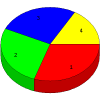

Week of 12/27/2009 to 1/2/2010: Top
4 of
4 File Types (Extensions)
Sorted by Access Count
Individual file types as determined by file extensions. All URLs that
do not contain an extension are counted as directories.

| Rank |
Type |
Accesses |
% |
Bytes |
% |
| 1 |
jpg
|
24 |
30.38 |
1,181,006 |
81.04 |
| 2 |
htm
|
21 |
26.58 |
36,319 |
2.49 |
| 3 |
Directory (folder)
|
21 |
26.58 |
49,875 |
3.42 |
| 4 |
gif
|
13 |
16.46 |
190,176 |
13.05 |